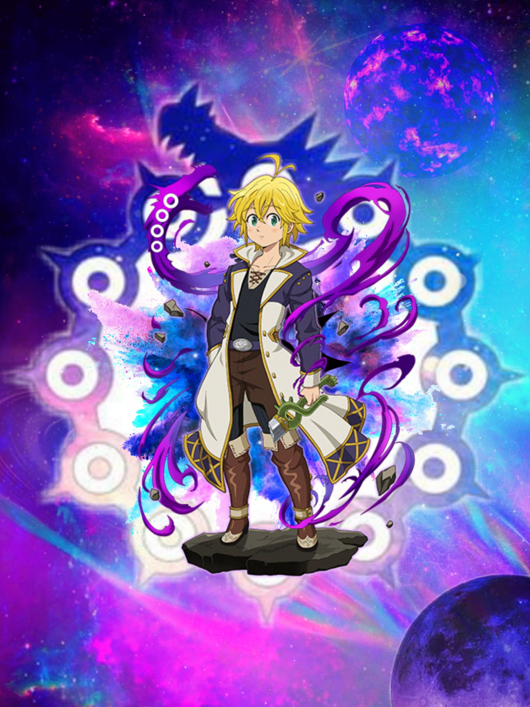

Meliodas
Meliodas is the main character in "The Seven Deadly Sins" anime and manga series. He's the leader of the Seven Deadly Sins and the owner of the Boar Hat tavern. Meliodas is incredibly strong, with his special power being Full Counter, which allows him to reflect attacks back at the attacker. Despite his cheerful and carefree demeanor, he has a complex past, being the eldest son of the Demon King and the former leader of the Ten Commandments. He deeply loves Elizabeth Liones, with whom he shares a long and tragic history.